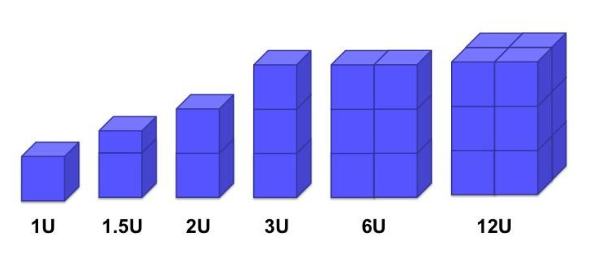
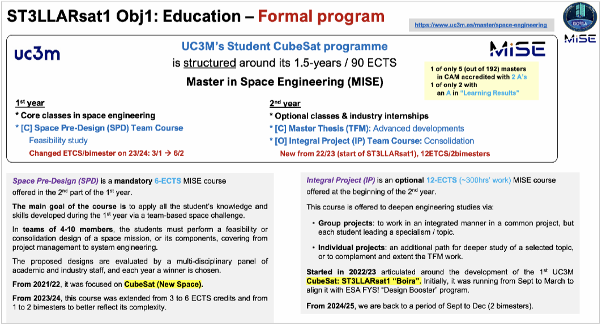
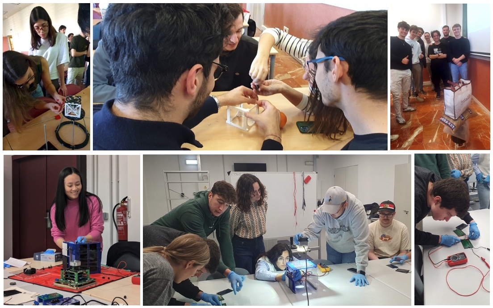
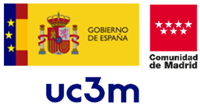
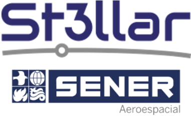
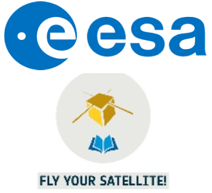
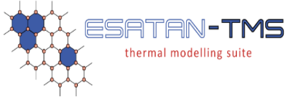
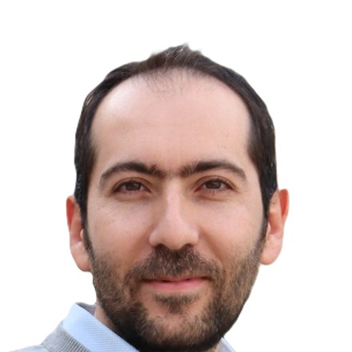

ST3LLARsat
UC3M's student-based CubeSat program


The program in numbers
From the start of the program, September 2022, up to July 2026ST3LLARsat is the student-based CubeSat program at the Universidad Carlos III de Madrid (UC3M), a public Spanish university founded in 1989. The program is integrated in UC3M's Master in Space Engineering (MISE) and was proposed in early 2021 but officially began in September 2022 with the start of its first mission, ST3LLARsat1 “Boira”.
Its aim is to provide UC3M engineering students with hands-on training on a real space project as well as non-academic skills such as team dynamics and leadership, engineering trade-offs (considering not only performance, but also practical constraints such as cost and complexity), and awareness and use of space standards.
The name of the program comes from the funding source that enabled to start the 1st mission: the UC3M-SENER aerospace chair ST3LLAR. This University-Industry chair was active from 2018 until 2024 and was established to enhance the educational and research collaboration in space technology between 6 UC3M research groups (from 4 departments) and the aerospace division of SENER, one of the largest Spanish technological companies.
Since the ST3LLARsat program began, more than 170 students have participated as volunteers or receiving ECTS credits for their work, 16 undergraduate/graduate theses have been defended, and 21 dissemination outputs produced. Similarly, the supervisory team has grown from 2 to 9 professors plus 7 experts that provide occasional support or were involved in previous years.
Brief introduction to CubeSats
The idea of CubeSats started in 1999 by profs Bob Twiggs (Space Systems Development Lab, Stanford University) and prof. Jordi Puig-Suari (California Polytechnic State University, CalPoly). Their aim was to teach students space engineering by establishing a hands-on project where the goal was to design, integrate, verify, launch, and operate a satellite the size of a 10 cm cube.
Generally, CubeSats are defined as a standardized satellite characterized by:
- A modular size of a 10x10x10 cm cube (known as the “1U” format)
- A weight per cube between 1.33 – 2 kg (depending on the agency: ESA, NASA)
- All the functionalities and subsystems of a standard satellite: structure, power, on-board computer/software, telecommunications, control/estimation, thermal, payload…
- Scalability: from 1U to a maximum of 27U (from 1 to 50 kg in weight), see Figure 1.
- 1U 10x10x10 cm
- 2U 10x10x20 cm
- 3U 10x10x30 cm
- 6U 10x20x30 cm
- 12U 20x20x30 cm
- 27U 30x30x30 cm

Of some 29,000 estimated universities in the world, only about 200 have successfully launched a satellite. Most, for their first mission, used a 1U CubeSat platform due to its 'ease' and low cost, especially since the success rate for a first university mission is around 50%, which increases to 75-80% for the second attempt. This demonstrates that it is a learning experience and that it is wise to carry out a first mission at a low cost and low risk (such as for 1U-2U) and then carry out more complex missions (from the perspective of size or scientific-technical payload).
Their success is that, despite their size, it has been shown that they can perform all kinds of missions:
- Educational
- Scientific (monitoring of Earth: climate/atmosphere/…, of Space: X-rays/Sun/…)
- Commercial (telecommunication, Internet-of-Things, navigation, security…)
- In-Orbit Demonstration (IOD) of technology
ST3LLARsat educational integration in the Master in Space Engineering (MISE)
As an educational program, a CubeSat development project is one of the most comprehensive and challenging that can be found at universities — especially the first time it is done. They are multidisciplinary and multifaceted, requiring expertise and knowledge on theory and practice, software and hardware, academic knowledge and engineering application, procurement and legal, and of course all the engineering branches: space, mechanical, electronics, computers, mathematics, and telecommunications among others.
To make it work, but specially to guarantee the continuity of the program beyond a first mission, the best approach is to formally integrate such program within the curricula of a degree, so that at least part of the professors' time is formally covered by their teaching and supervision duties and part of the students' time is also covered by credit-awarded work.
ST3LLARsat is integrated, see Figure 2, within UC3M's Master in Space Engineering (MISE), which is a 1.5-years degree (90 ECTS) involving 8 departments at UC3M and led by the aerospace engineering department (DAE). The MISE was established in 2018/19 with the aim to provide the comprehensive and specialized training required by the space industry. It is taught in English and consists of a 1st year of core formative courses, and a 2nd year formed by a mix of elective courses and thesis/projects options.
Since 2022 it has been adapted to formally include the student CubeSat program in its curricula by performing a CubeSat feasibility study during the 1st year core “Spacecraft Pre-Design (SPD)” course and then performing the development of the current ST3LLARsat# mission via 2nd year Master thesis (TFM) projects and/or the optional “Integral Project (IP)” course. During the latter, the credit-registered 2nd year students assume the role of subsystem leaders and are supported by 1st year MISE volunteers. The conclusion of the 2nd year MISE-IP course is around December while the start of the 1st year MISE-SPD course is in January and lasts until late May, so the handover and transfer of knowledge between students of the different cohorts can be smoothly aligned except for the Summer (where TFM work and practical training are used to bridge the gap in time between academic years).

A CubeSat program benefits from being integrated in a formal degree, but the benefit is mutual since the documentation developed during the former as well as the software/hardware tools can be introduced into the latter's curricula, resulting in a more practical and real-life learning experience for all the students. In the case of UC3M's ST3LLARsat and the MISE, the benefit for the latter from the former was possible to be quantified since the MISE's first accreditation (the official process in Spain by which the education authorities evaluate the quality of a degree) was performed in early 2024 (5 years after the start of the MISE and 1.5 after the start of ST3LLARsat) and was awarded 2 'A's out of 6, which positioned the MISE as 1 of only 5 engineering masters in the Comunidad de Madrid with that highest result (from a total of 192 masters at that time). The accreditation team explicitly highlighted the CubeSat program as a key aspect for this outcome.
An example from the curricula perspective of this symbiotic interaction is the evolution that the MISE-SPD course has undergone since 2021/22, when the course was reoriented to focus on CubeSat missions. Specially since 2024/25, the third year of ST3LLARsat1, the course has been adapted following ECSS and CubeSat-CalPoly standards, ESA Academy procedures (acquired from our participation in ESA Fly-Your-Satellite! Design Booster program, see next) and by introducing software and hardware labs based on the tests performed for ST3LLARsat1.
The SW labs include the use of specialized SW such as: a.i. solutions' FreeFlyer (to estimate orbit lifetime and coverage analysis), ESA's DRAMA (to calculate deorbiting times and debris probability risks), and ADCS detumbling simulators (to calculate the performance of the student teams' control equipment choices and to show them the need to estimate well the MCI (mass/center-mass/moments-inertia) characteristics of their platform). The HW labs, see Figure 3, cover from: (a) building a 3D-printed 1U CubeSat structure: first calculating stresses and maximum loads, and then seeing if it supports the estimated load by physically loading it with weight; (b) building a DIY magnetorquer and testing it in the 3D-printed 1U CubeSat: experiencing first-hand the practical issues of wiring, heat, power-depletion, and space constraints; (c) measuring solar-panel efficiency: and again, experiencing the issue of wiring and of the mismatch between theoretical calculations and actual performance.

Participation in ESA FYS! Design Booster program
The introduction of the CubeSat challenge in the 2021/22 MISE-SPD course and the planned starting date of the ST3LLARsat1 program for September 2022 were not by chance. During 2021, the program director (prof. Marcos) had already been looking for information and support to establish the CubeSat program at UC3M, and in December 2021 he attended an information session by ESA Academy on its 4th Fly-Your-Satellite! (FYS!) program edition. In this presentation, ESA announced the opening of a new, more compact program, the 1.5-year FYS! Design Booster, which was expected to open in Spring 2022 and represented a great opportunity for ST3LLARsat.
The 2021/22 MISE-SPD concluded around end of May '22, and the 1st official information session on ESA's FYS! Design Booster program was held online on 8th June 2022 by ESA Education Office. The proposal submission deadline was set for 2nd October 2022 and thus, ESA FYS!-DB program aligned very well with our planning. The proposal submission, performed in the 2022/23 MISE-IP course, consisted mainly in adapting to the targeted 2U dimension the preliminary analyses from one of the proposed student missions in the 2021/22 MISE-SPD. It is a testament to the work of our MISE students that we were selected in December 2022 by ESA to participate in its FYS! Design Booster program (one of only 5 European university teams, out of 12 pre-selected teams — some of which had already developed and sent CubeSats to space).
Starting in January 2023, the organization and development of ST3LLARsat1 was reshaped around the timeline of the ESA FYS! Design Booster program, which was substantially shorter than our internal planning from June 2022. The high-level ESA objectives for BDR (March '23) were to perform trade-off studies, freeze requirements, select system and subsystems concepts, and establish the CubeSat baseline design. And for FDR (June '24), to finalize system and subsystem analyses, detail the definition of interfaces, and plan the AIVT activities for the future.
ESA FYS! team assigned to ST3LLARsat1 two main contact points (Dr. Loris Franchi and Mr. David Palma), provided a common repository (to facilitate the exchange within the team and with ESA), and established regular status update videoconferences with pre-defined agendas in order to support the ST3LLARsat1 team complete the FDR phase of the program. Dedicated sessions with other ESA experts took place also periodically to discuss trade-offs and component selection, as well as numerous RIDs sessions after the BDR/FDR milestones, all of which resulted in communication exchanges with ESA almost bi-weekly. Internal ST3LLARsat1 meetings were intertwined with the ESA meetings in order to prepare properly for them.
Our participation in ESA's FYS! Design Booster program was challenging, with an intense pace and many documents and collocation meetings, but above all, the program was a really good opportunity to learn, and it helped us take our mission from a feasibility concept to many steps closer to a consolidated system. Thus, the experience was very helpful and fruitful, if a bit stressful and demanding. We would like to acknowledge and thank the support from all the ESA FYS! Design Booster team and experts, and specially from Dr. Loris Franchi and Mr. David Palma.
Acknowledgements

Prof. A. Marcos gladly acknowledges the “Senior Distinguished Beatriz Galindo” award by the Spanish government & additional funding by the VPRICIT framework of the Comunidad de Madrid-UC3M.

For funding and expert support, many thanks to the UC3M-SENER aerospace chair ST3LLAR and SENER.

To ESA Academy for their expert support, training and providing access to their facilities to our students.

For providing free of charge their thermal modeling software.
For providing free of charge their Mission Analysis software.
To UC3M's radio-amateur certified student society, for our joint Ground-Station development.
ST3LLAR & ST3LLARsat1 team
Directors
Director
2021
Technical expertiseADCS, SIL/HIL, AIVT, plus 'jack-of-all-trades' for: electronics, OBSW, thermal, GNSS, TT&C, ConOps
Technical expertiseStructures, vibration AIVT, power, thermal
ST3LLARsat1 supervisory team

PhD candidateTechnical expertiseADCS SIL/HIL/AIVT, GS
ST3LLARsat1 associate members
- Nov '22 Prof. Manuel Sanjurjo, DAE.
- Nov '22 Prof. Gonzalo Sánchez-Arriaga, DAE.
- Sep '23 – Jun '24 Mr. Jesús Zurera, SENER. Technical expertise: OBSW.
- Sep '23 – Jun '24 Prof. Almudena Lindoso, ETD. Technical expertise: OBSW.
- Sep '25 Prof. Kun Wang, DAE. Technical expertise: ADCS HIL, GNC.
- Sep '25 – Jun '26 Prof. Luis Entrena, ETD. Technical expertise: PCB-ADCS, radiation.
- May '26 Prof. Miguel Ángel Gómez, DAE/INTA. Technical expertise: GNSS/PNT, AIVT.